1016B10 single cylinder head extension - change gasket
- Path
- Procedures > 10 ENGINE > 1016 CYLINDER HEAD/S > 1016B cylinder head extension(s) > 1016B10 single cylinder head extension - change gasket
- Kind
- repair procedure (removal / refitting; the operation number is the code)
- Applies to
- engines: 1.9 JTD 16V; all production periods
- Interactive page
- https://sloeber94.github.io/elrnDB-a147/en/#/3025080
Applies to: engines: 1.9 JTD 16V; all production periods
 Removing
Removing
 Refitting
RefittingPosition the vehicle on the ramp
Proceed with removal 1016A10 sound-proofing cover - r + r .
Ensure that the ignition key is in the OFF position, then disconnect the negative battery terminal (-).
 | Name | Connector |
|---|---|---|
- | Battery |
Proceed with removal 1008C10 power unit upper reaction link r r .
Proceed with removal 1060G80 ds electric injection control unit - r r .
Proceed with removal 4450B04 right front wheel r r .
Proceed with removal 7055B54 under-engine guard - r r .
Proceed with removal 7055B91 Right front WHEEL ARCH LINER - R.R. .
Proceed with removal 1092G10 single engine belt r r .
Proceed with removal 1092A10 Crankshaft services PULLEY - R.R. .
Proceed with removal 1092G20 engine component single belt fixed tensioner - one - r + r .
Proceed with removal 1032D12 timing system protective cover(s) - r + r .
Proceed with removal 1032B10 toothed timing belt - r + r for timing adjustment or replacement .
1. Disconnect the electrical connections from the injectors.
| Name | Connector |
|---|---|---|
1 | Injector |
2. Disconnect the electrical connection from the cam angle sensor.
| Name | Connector |
|---|---|---|
2 | Timing sensor. |
3. Disconnect the electrical connection for the air conditioning compressor.
| Name | Connector |
|---|---|---|
3 | Air conditioning compressor engagement electro-magnet |
Release the electrical wiring from the band on the timing cover.
4. Undo the bolts fastening the cable duct and move the electrical wiring aside.
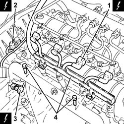
Applies to: engines: 1.9 JTD 16V; all production periods
1. Push clips (1a) by hand and disconnect the pipe from the injectors to the fuel recovery manifold (1b), injectors side and move it aside.
2. Undo the connectors (2a), (2b) and remove the pipe from the fuel manifold to the injectors (2c).
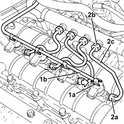
Applies to: engines: 1.9 JTD 16V; all production periods
1. Undo the nuts fixing the injector brackets.
2. Remove the injectors (2a) complete with brackets using the tool (2b).
If new fuel injectors are fitted:
- determine the identification code stamped on the top;
- check that the new injectors(s) is (are) recognized by the engine management control unit using the Examiner.
 | Name | Country |
|---|---|---|
2b | Extractor | 1.870.897.300 |
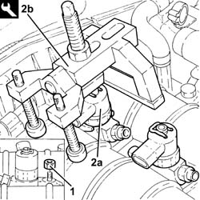
Applies to: engines: 1.9 JTD 16V; all production periods
1. Undo the connectors (1a), (1b) and remove the pipe from the pressure pump to the fuel manifold (1c).
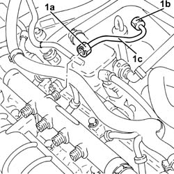
Applies to: engines: 1.9 JTD 16V; all production periods
1. Disconnect the electrical connection from the fuel pressure sensor.
| Name | Connector |
|---|---|---|
1 | Fuel pressure sensor |
2. Undo the bolts (2a) and remove the single fuel manifold pipe (2b) complete with fuel pressure sensor (2c).
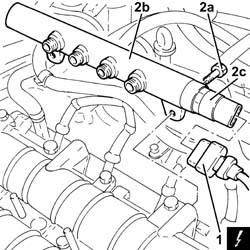
Applies to: engines: 1.9 JTD 16V; all production periods
Proceed with removal 5530B10 battery - r+r .
1. Loosen the band and disconnect the vacuum pipe from the brake servo.
2. Loosen the band and disconnect the engine oil vapour recovery pipe from the engine oil filler.
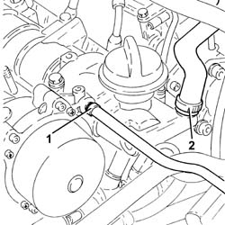
Applies to: engines: 1.9 JTD 16V; all production periods
1. Disconnect the electrical connection from the engine coolant temperature sensor.
| Name | Connector |
|---|---|---|
1 | Engine temperature sender unit |
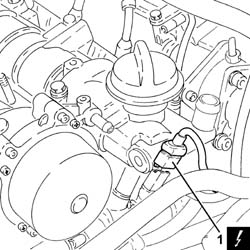
Applies to: engines: 1.9 JTD 16V; all production periods
1. Undo the bolts (1a) and remove the engine oil filler (1b).
2. Remove the gasket.
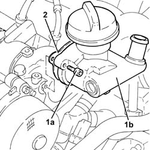
Applies to: engines: 1.9 JTD 16V; all production periods
1. Undo bolts (1a) and remove vacuum unit (1b).
2. Remove the gasket.
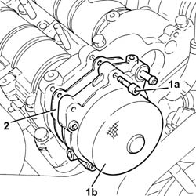
Applies to: engines: 1.9 JTD 16V; all production periods
1. Undo the bolts (1a), (1b), and remove the camshaft housing assembly (1c).
2. Remove the gasket.
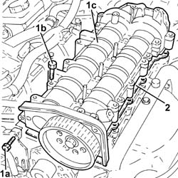
Applies to: engines: 1.9 JTD 16V; all production periods
Refitting
Removing1. Place the upper cylinder head gasket back in its housing.
2. Place the camshaft housing assembly (2a) back in its housing and secure it tightening the bolts (2b) to the recommended torque.
 | Fastening | Component | Ø | Value (daNm) |
|---|---|---|---|---|
2b | Bolt | CYLINDER HEAD EXTENSION | M8 | (Cylinder head side 23 28 |
| Fastening | Component | Ø | Value (daNm) |
|---|---|---|---|---|
2b | Bolt | INJECTION PRESSURE PUMP MOUNT | M8 | (Cylinder head side) 2.3 ÷ 2.8 |
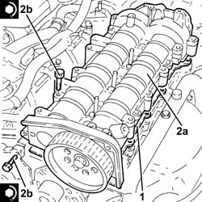
Applies to: engines: 1.9 JTD 16V; all production periods
Proceed with refitting 1032B10 toothed timing belt - r + r for timing adjustment or replacement .
1. Place the vacuum unit (1a), complete with gasket (1b), back in its housing and secure it tightening the bolts (1c) to the recommended torque.
| Fastening | Component | Ø | Value (daNm) |
|---|---|---|---|---|
1c | Bolt | BRAKE SERVO VACUUM PUMP | M6 | (Cylinder head side 05 06 50 |
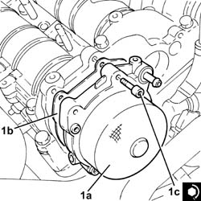
Applies to: engines: 1.9 JTD 16V; all production periods
1. Place the engine oil filler (1a), complete with gasket (1b), back in its housing and secure it tightening the bolts (1c) to the recommended torque.
| Fastening | Component | Ø | Value (daNm) |
|---|---|---|---|---|
1c | Bolt | OIL FILTER FITTING | M6 | (Cylinder head side 08 10 |
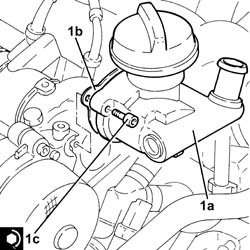
Applies to: engines: 1.9 JTD 16V; all production periods
Connect the electrical connection to the engine coolant temperature sensor.
Connect the oil vapour recovery pipe to the engine oil filler and tighten the band.
Connect the vacuum pipe to the brake servo and tighten the band.
Proceed with refitting 5530B10 battery - r+r .
1. Place the single fuel manifold pipe (1a), complete with fuel pressure sensor (1b), back in its housing and secure it tightening the bolts (1c) to the recommended torque.
| Fastening | Component | Ø | Value (daNm) |
|---|---|---|---|---|
1c | Bolt | INJECTOR FUEL MANIFOLD (DIESEL) | M8 | (Camshaft housing side 23 28 |
2. Connect the electrical connection to the fuel pressure sensor.
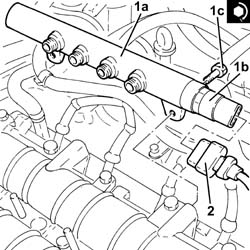
Applies to: engines: 1.9 JTD 16V; all production periods
1. Place the pipe from the pressure pump to the single fuel manifold back in its housing and fix it using the connectors without tightening them.
2. Tighten the connector for the pipe from the pressure pump to the single fuel manifold, pump side, to the recommended torque using a suitable spanner.
| Fastening | Component | Ø | Value (daNm) |
|---|---|---|---|---|
2 | Connector | PRESSURE PUMP LINE TO FUEL MANIFOLD | M14 | (Pressure pump side 22 24 |
3. Tighten the connector for the pipe from the pressure pump to the single fuel manifold, fuel manifold side, to the recommended torque using a suitable spanner.
| Fastening | Component | Ø | Value (daNm) |
|---|---|---|---|---|
3 | Connector | PRESSURE PUMP LINE TO FUEL MANIFOLD | M14 | (Fuel manifold side 22 24 |
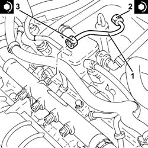
Applies to: engines: 1.9 JTD 16V; all production periods
1. Refit the injectors (1a) complete with brackets and secure by tightening the nuts (1b) to the specified torque.
| Fastening | Component | Ø | Value (daNm) |
|---|---|---|---|---|
1b | Nut | INJECTORS(DIESEL) | M8 | (Camshaft housing side) 2.3 ÷ 2.8 |
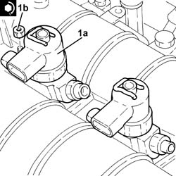
Applies to: engines: 1.9 JTD 16V; all production periods
1. Fit the new pipes from the fuel manifold to the injectors and secure them using the connectors without tightening them.
2. Tighten the connectors for the pipes from the fuel manifold to the injectors, injector side, to the recommended torque using a suitable spanner.
| Fastening | Component | Ø | Value (daNm) |
|---|---|---|---|---|
2 | Connector | FUEL MANIFOLD LINE TO INJECTORS | M12 | (Injector side) 2.2 ÷ 2.4 |
3. Tighten the connectors for the pipes between the fuel manifold and the injectors, fuel manifold side, to the recommended torque using a suitable spanner.
| Fastening | Component | Ø | Value (daNm) |
|---|---|---|---|---|
3 | Connector | FUEL MANIFOLD LINE TO INJECTORS | M12 | Fuel manifold side 22 24 |
4. Connect the pipe from the injectors to the fuel recovery manifold (4a) to the injectors pushing it until the clips (4b) can be heard clicking into place.
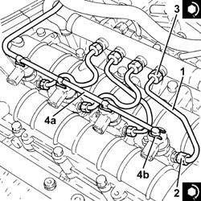
Applies to: engines: 1.9 JTD 16V; all production periods
Place the electrical wiring back in its housing and tighten the cable duct fixing bolts.
Fasten the electrical wiring using the band on the timing cover.
Connect the electrical connection to the air conditioner compressor.
Connect the electrical connection to the cam angle sensor
Connect the electrical connections to the injectors.
Proceed with refitting 1032D12 timing system protective cover(s) - r + r .
Proceed with refitting 1092G20 engine component single belt fixed tensioner - one - r + r .
Proceed with refitting 1092A10 Crankshaft services PULLEY - R.R. .
Proceed with refitting 1092G10 single engine belt r r .
Proceed with refitting 7055B91 Right front WHEEL ARCH LINER - R.R. .
Proceed with refitting 7055B54 under-engine guard - r r .
Proceed with refitting 4450B04 right front wheel r r .
Proceed with refitting 1060G80 ds electric injection control unit - r r .
Proceed with refitting 1008C10 power unit upper reaction link r r .
Connect the negative (-) battery terminal
Proceed with refitting 1016A10 sound-proofing cover - r + r .
Remove the car from the ramps.
Topics linked from this page (18)
- 1008C10 power unit upper reaction link r r
- 1016A10 sound-proofing cover - r + r
- 1032B10 toothed timing belt - r + r for timing adjustment or replacement
- 1032D12 timing system protective cover(s) - r + r
- 1060G80 ds electric injection control unit - r r
- 1092A10 Crankshaft services PULLEY - R.R.
- 1092G10 single engine belt r r
- 1092G20 engine component single belt fixed tensioner - one - r + r
- 4450B04 right front wheel r r
- 5530B10 battery - r+r
- 7055B54 under-engine guard - r r
- 7055B91 Right front WHEEL ARCH LINER - R.R.
- A1B Battery ( Connectors )
- K36 Engine temperature sender unit
- K47 Timing sensor.
- K83 Fuel pressure sensor
- L20 Air conditioning compressor engagement electro-magnet
- N70 Injector (cyl. 1)